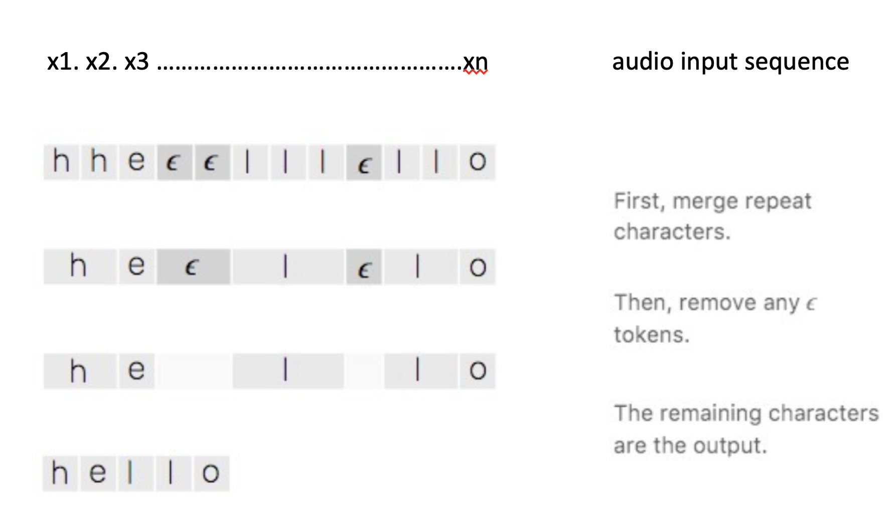
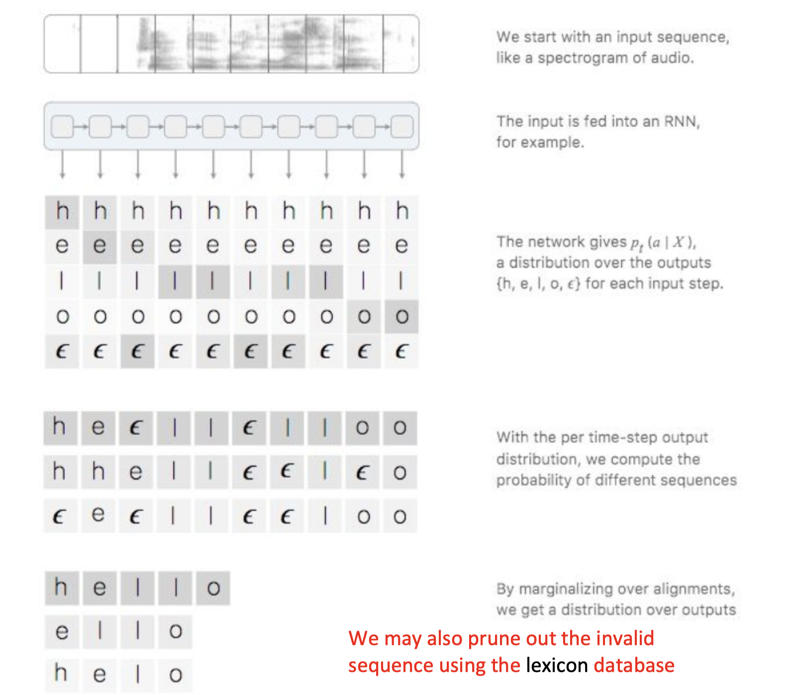
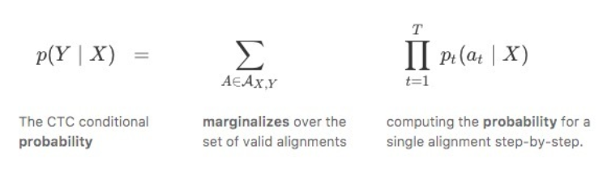
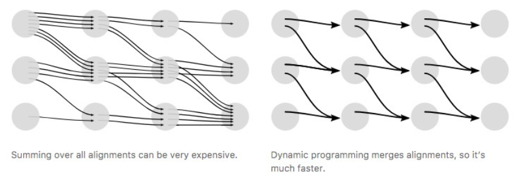
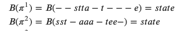
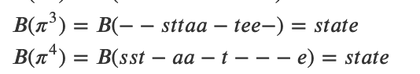
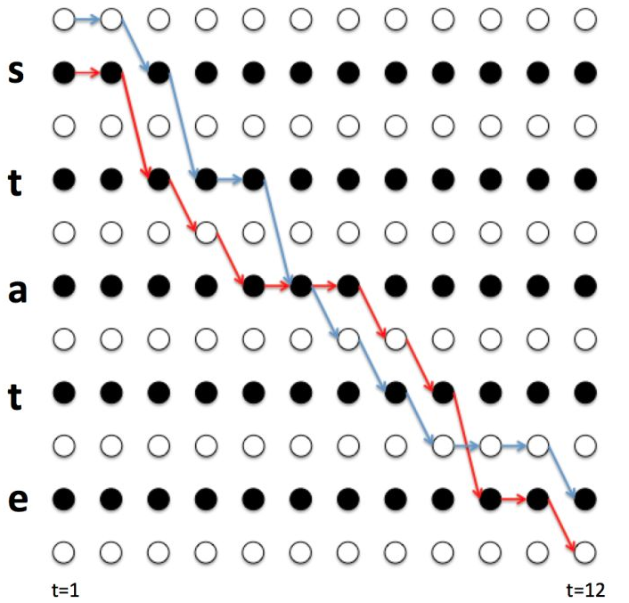
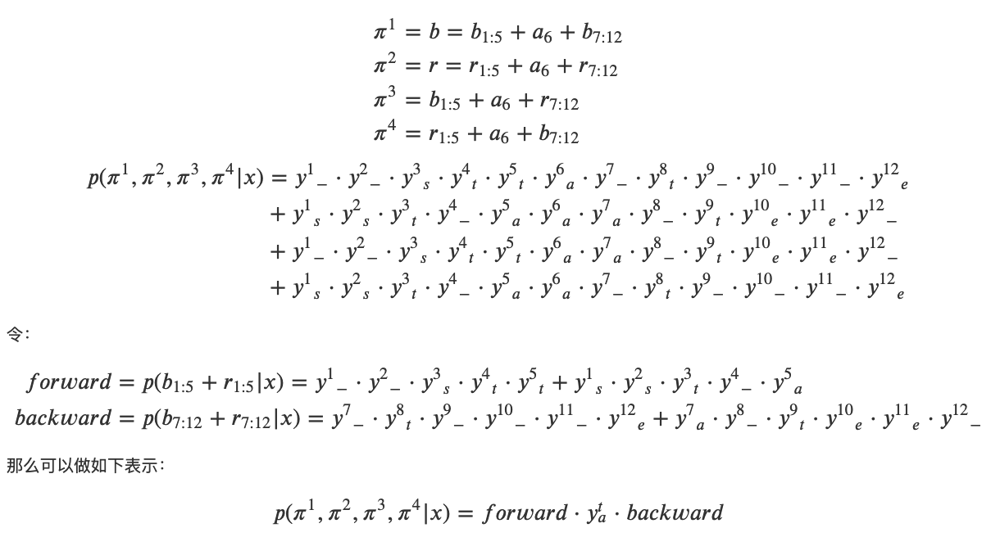
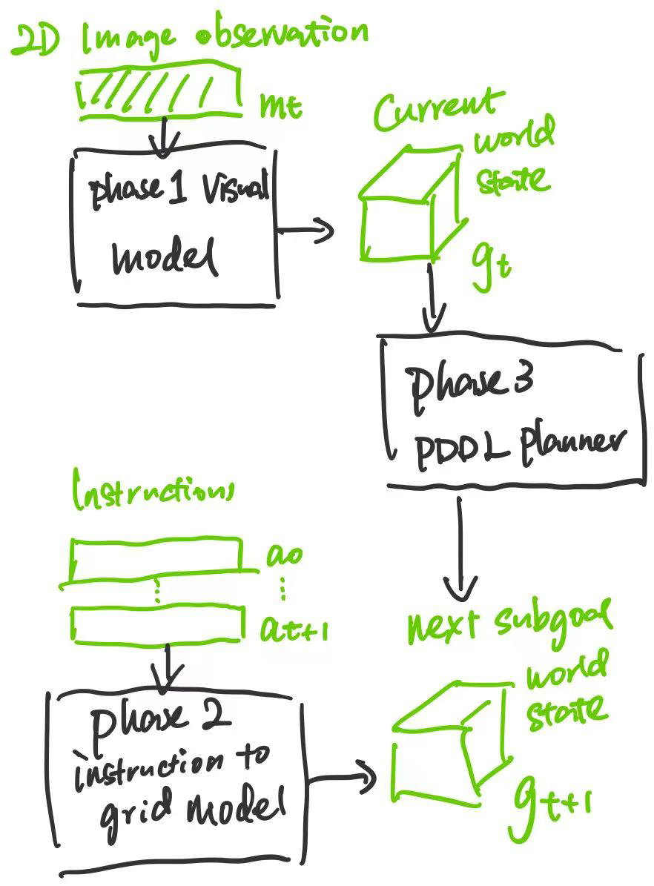

--- DON'T MODIFY THIS LINE ---
[TOC]
TODO List#
Testing other “instruction texts to grid” training methods#
| Method |
Norm Acc (test) |
Norm Acc (train) |
Original Acc |
| original |
64.8% |
99% |
99.2% |
| local additions |
59.4% (only measure the accuracy of the local additional structure rather than the whole structure) |
99% |
99.8% |
| one step |
59.8% |
99% |
99.1% |
normalised accuracy is measured as
# of correct blocks / structure size
original accuracy is measured as
# of correct blocks / grid size(9x11x11)
this metrics always produce high value because in a 9x11x11 grid, most of the space is empty, the model can obtain a high baseline accuracy by just outputting an empty grid
Ha! This means that the model tends to just produce empty grids. Indeed, producing empty grid seems to be the safest way of obtaining low loss value. (the ratio of # of empty block over the total size is about 0.9862) Let’s see if we can solve this problem by introducing weights.
- Ok, the normalised accuracy increases from 0% to about 59% after we introduce weights to the loss function.
- but the results also indicate that this instruction to grid model is not competent to solve the task.
- the performance may increase as we gather more training dataset
- Currently we only have 580 episodes to train, which is quite insufficient for deep learning model
- Can we automatically produce more training data for this instruction to grid task? …
CTC connectionist temporal classification method#
CTC is used to tackle sequence problems where the timing is variable

e.g., for a speech recognition, the difficulty is to correctly align the sequence of audio slices with the text words
We cannot simply set a rule like “one word is associated with 10 audio tokens” as people talks with difference paces
So, in terms of IGLU Architect Builder task, it’s good to align partial instructions to intermediate building structures.
Specifically, let’s say we have instruction sentences ${x_1,x_2,…,x_T}$, and corresponding output (partial) structure ${g_1, g_2, … g_x}$ (the final target structure $G = g_1 \cup g_2 \cup …\cup g_x$ ). The alignment task is about finding a correct mapping between them.
The alignment task is challenging because
- length of {x} and {g} vary
- the length ratio between {x} and {g} vary
- there is no strictly alignment between {x} and {g}
How CTC solve this

there is some characteristics about CTC (assuming X is the input and Y is the output)
- the alignment process is monotonic
- X to Y is many to one alignment
- according to the second characteristic, length of Y is smaller than X


Using Dynamic Programming (i.e. trade off between memory and computation power) to compute faster

in CTC, we draw paths
first, let’s say we have real word output $\mathcal l$ = “state”
we have a function $B$ that convert intermediate characters {a-z} $\cup$ {$\epsilon$} to real word output


Note that some path are shared (that is where DP can work)
we would have many combinations $\pi$ to obtain real output $\mathcal l$
but these combinations can be shown as paths, (because CTC is monotonic)


And see, we do not need to re-calculate the shared path’s probability value.
PDDL model for building blocks#
Overview of our agent model#

Paper Reading Notes#